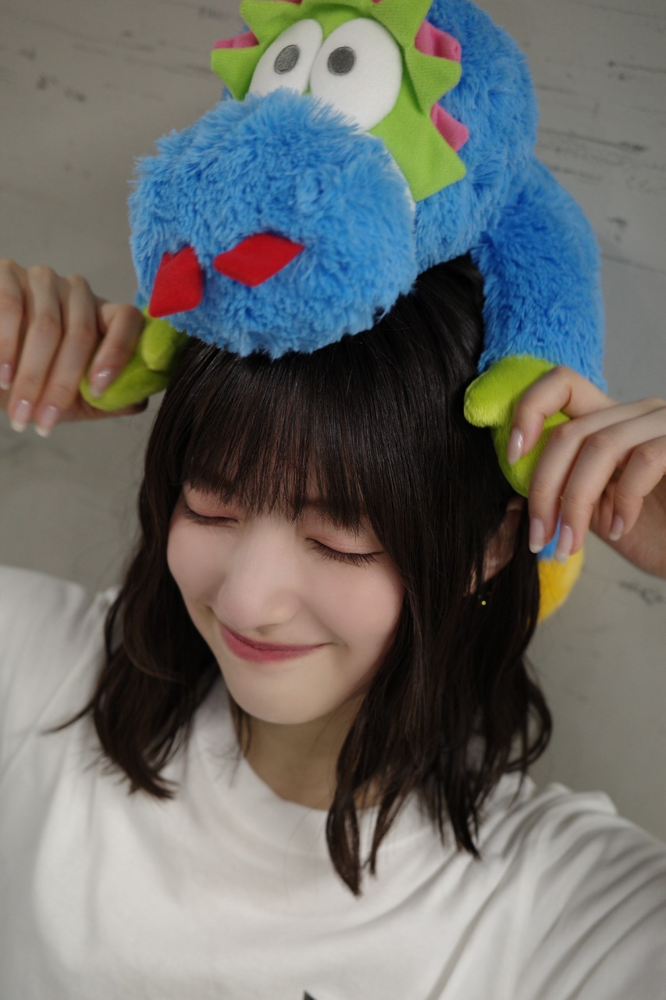
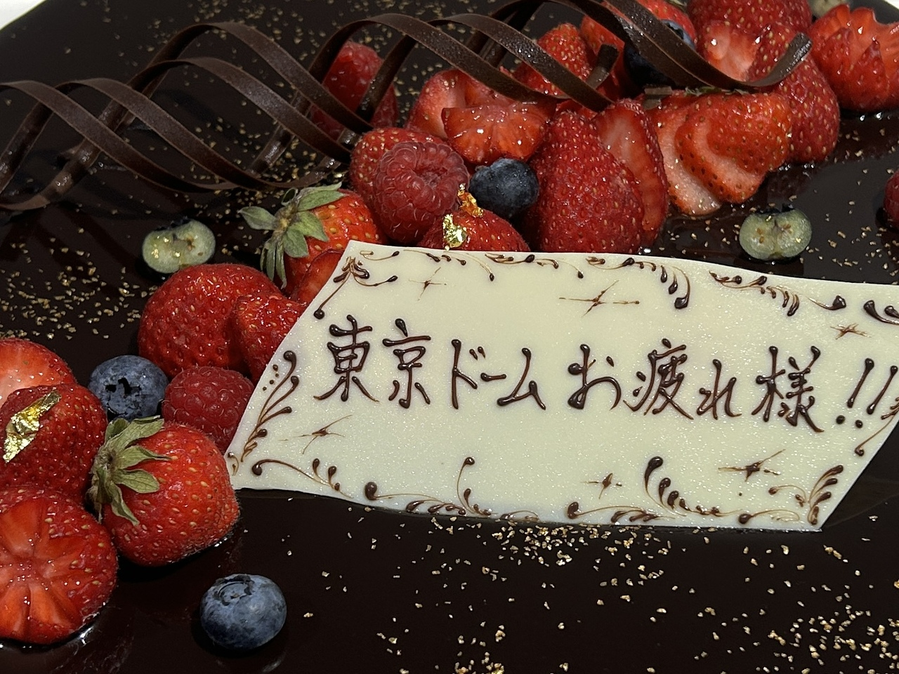
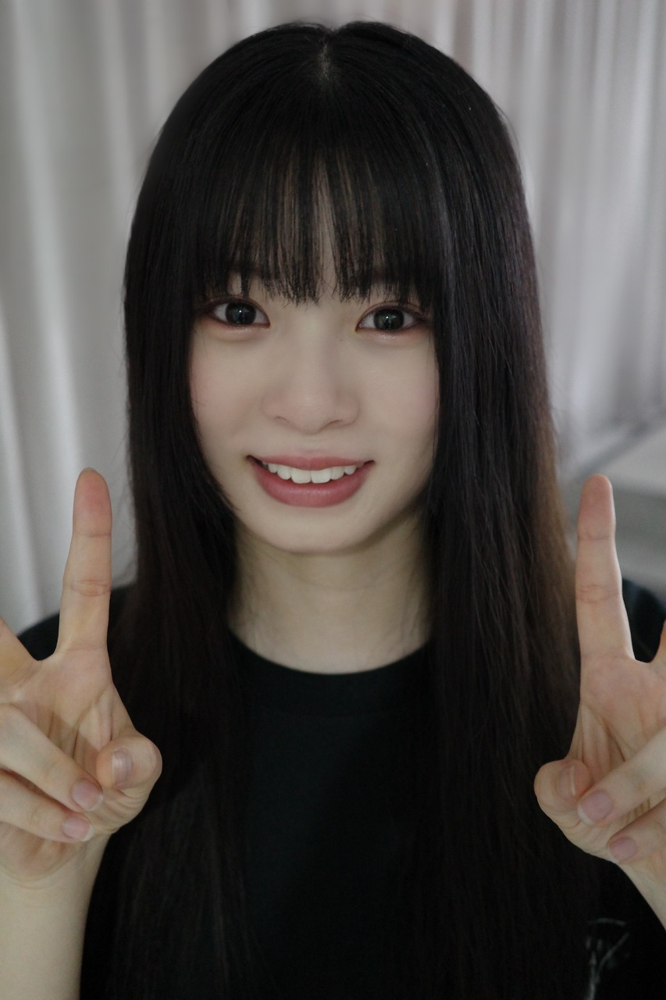
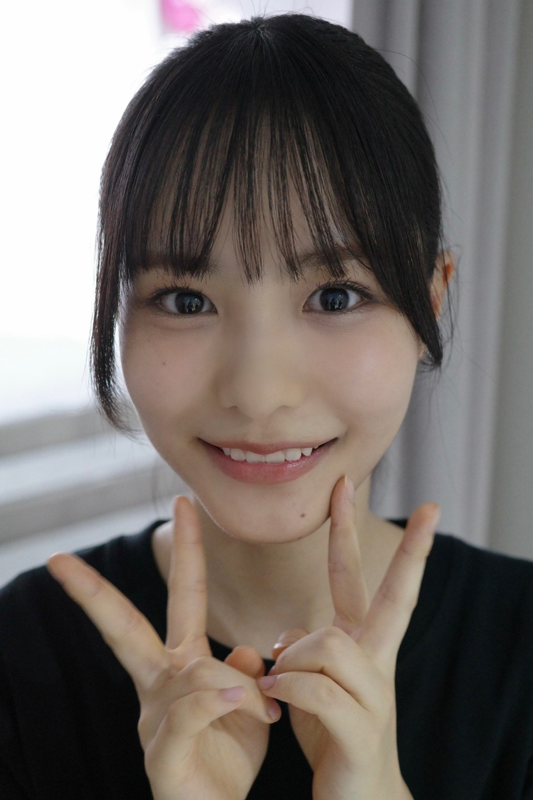
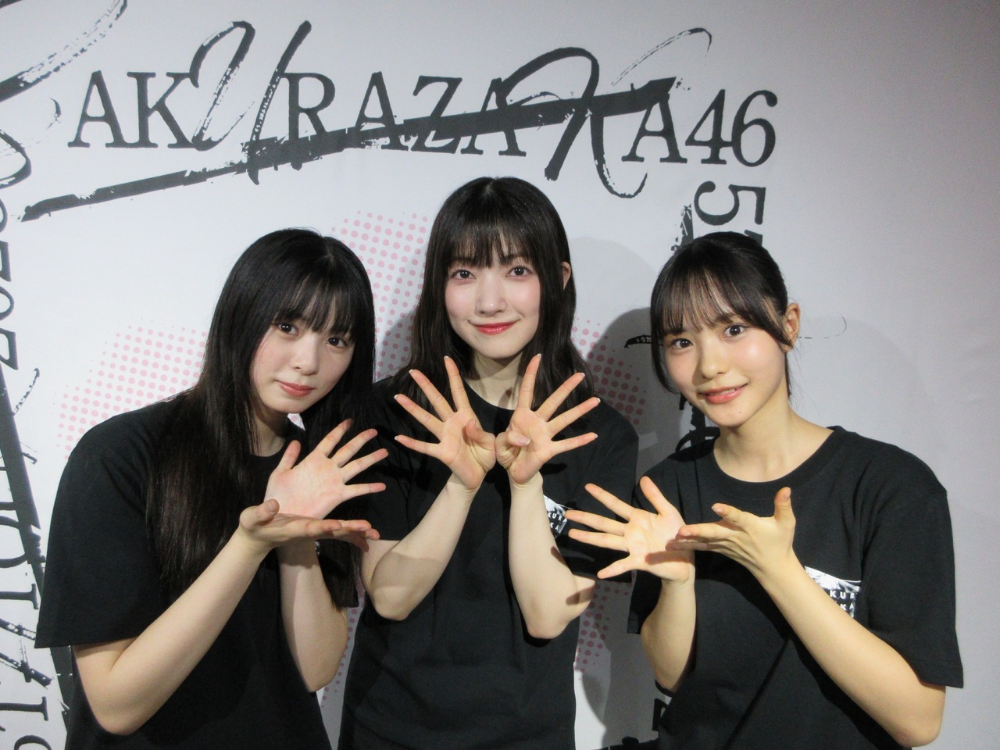
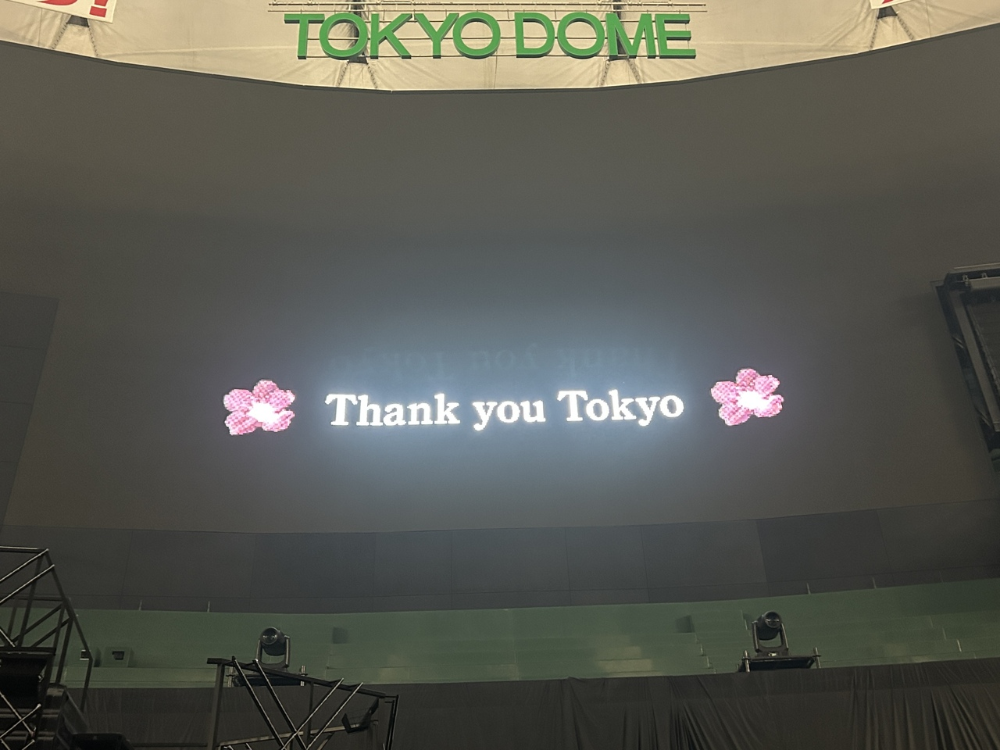
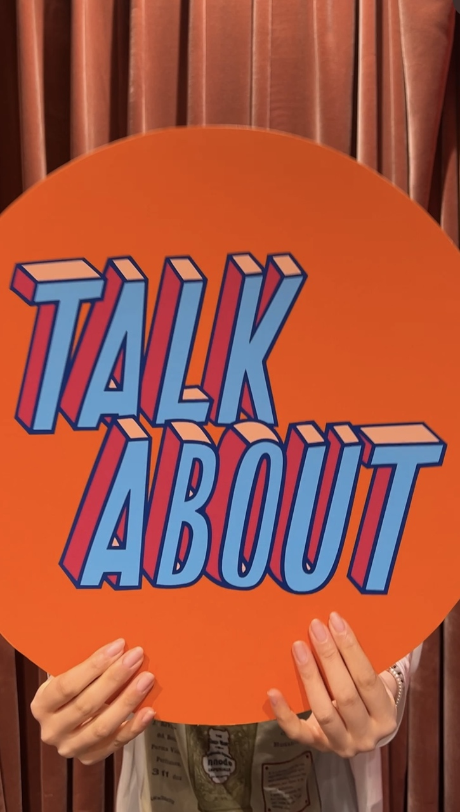

楽しみなことって
その直前の準備している時間が1番楽しいって話あるじゃないですか
こういう会える機会
Buddiesに準備からわくわくしていてほしいけど
当日が1番楽しくあってほしいです！
それで、ああ楽しかったなって余韻が
次の日もその次の日も
次の楽しみが見つかるときまで、長く続いていたらいいなって思います
私たちがたくさん、次の楽しみを準備するので、
足りなくなったらたくさんパワー貰いにきてください✴︎
うーん、貰いに来なくても
まだ残っててもあげちゃいます
いっぱい、いーーーーーっぱいあげます
頑張らせて！！

東京ドーム3日間ありがとうございました！
とても幸せな時間でした
Buddiesがきらきら眩しかったです
私たちが、どうなるかなって不安だったことを
一緒に、やりきった！楽しかった！
と思えるものにしてくれてありがとう
京セラドームは、初めての景色が見れることはもう絶対だけど
それが最高のものであるように頑張ります！


誘ってくれた！ときめいた！

東京ドームの3日目の公演が終わった後
いーっつも支えてくださってるスタッフさんが
ふと、
ほんまに最強のチームやなって思った
っておっしゃってくださって
帰り道にその言葉と、ステージから見たBuddiesのお顔を思い出して
じーーーーんてうるうるなりました
Buddiesと、みんなと、みなさんと一緒なら
なんだってできてしまいそうな気持ちになりました
Buddiesがいないとだめだ
ずーーっと一緒にいようか〜

好きでいてくれるって
本当にありがたいことだなあって思います！
毎週土曜22:00放送している
TBSラジオ「TALK ABOUT」
22:30〜22:40の10分間
「櫻坂 TALK ABOUT」
という新コーナーを櫻坂46のメンバーが
務めさせていただくことになりました✨
嬉しい〜〜〜
TALK ABOUTファミリーと呼んでくださる
温かくて面白いTALK ABOUTチームのみなさんにまたお会いできるのがとても嬉しいですし、
グループを知っていただける機会が増えて
とてもありがたいです！
収録中ももちろん、メンバーの回を聴いていても初めて知ることがたくさんで
昔の話とか、どんな学生だったとか
メンバーについてまだまだ知らないことがいっぱいあるんだなって思います
自分自身も、目覚ましの曲話すの初めてだったよ⏰
ぜひお聴きください*

昨日と一昨日のミーグリもありがとう୨୧
また写真載せます！
いつもありがとう、だいすきだよ〜〜
またね〜*
大園玲